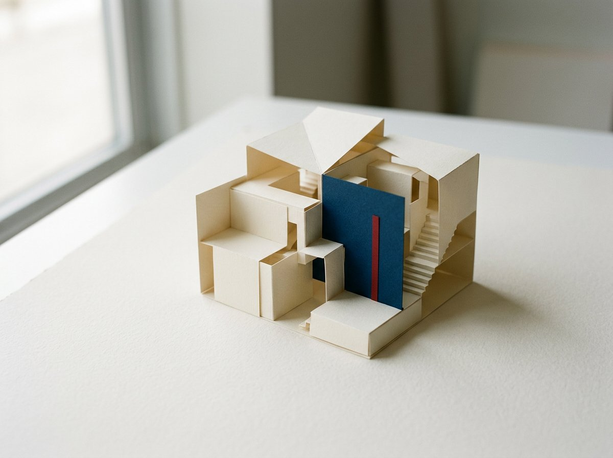

Visual essay
A page begins with one decision.
Good composition is easier to understand when every section has one job and every visual choice can explain its purpose.

Structure before decoration
Start with the order in which a reader should notice, understand, and act. Type, space, and imagery can then reinforce that order. Decoration added before structure often becomes an obstacle that the rest of the layout must work around.
Each section should answer a real question. If a block can disappear without changing the argument or the task, it probably does not belong in the page.
Restraint creates contrast
A memorable page does not need every surface to be expressive. One strong decision becomes clearer when nearby elements remain calm. The result feels deliberate because the page spends attention where attention is useful.